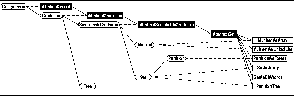
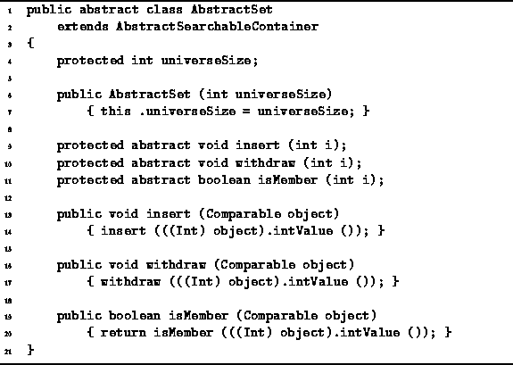

Data Structures and Algorithms
with Object-Oriented Design Patterns in Java
Data Structures and Algorithms
with Object-Oriented Design Patterns in Java
As discussed above,
this chapter addresses the implementation of sets of integers.
A set is a collection of elements.
Naturally, we want to insert and withdraw objects from the collection
and to test whether a given object is a member of the collection.
Therefore, we consider sets as being derived
from the SearchableContainer class defined in Chapter  .
(See Figure ).
In general, a searchable container can hold arbitrary objects.
However, in this chapter we will assume that the elements
of a set are integers.
.
(See Figure ).
In general, a searchable container can hold arbitrary objects.
However, in this chapter we will assume that the elements
of a set are integers.

Figure: Object class hierarchy
Program defines the Set interface.
The Set interface extends the the SearchableContainer
interface defined in Program .
Five new methods are declared--union, intersection, difference,
isEQ, and isSubset.
These methods correspond to the various set operations discussed above.
Program defines the AbstractSet class.
The AbstractSet class extends the AbstractSearchableContainer
class introduced in Program
and it implements the Set interface
defined in Program .
As shown in Figure ,
all of the concrete set classes discussed in this chapter
are derived from the AbstractSet class.

Program: AbstractSet class.
The AbstractSet class defines a field called universeSize.
This field is used to record the size of the universal set.
The constructor for the AbstractSet class
is given in Program .
It takes a single argument, ,
which specifies that the universal set shall be  .
.
The items contained in a set are integers. Therefore, the AbstractSet class defines abstract methods called as insert, isMember, and withdraw, that take int arguments.
However, the methods of the SearchableContainer interface such as insert, isMember, and withdraw, expect their arguments to be Comparable objects. For this reason, the AbstractSet class provides a default implementation for each such method which converts its argument to an int and then invokes the like-named abstract method that takes an int argument.
 Copyright © 1998 by Bruno R. Preiss, P.Eng. All rights reserved.
Copyright © 1998 by Bruno R. Preiss, P.Eng. All rights reserved.